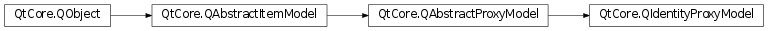

QIdentityProxyModel¶
Detailed Description¶
The
PySide2.QtCore.QIdentityProxyModelclass proxies its source model unmodified
PySide2.QtCore.QIdentityProxyModelcan be used to forward the structure of a source model exactly, with no sorting, filtering or other transformation. This is similar in concept to an identity matrix where A.I = A.Because it does no sorting or filtering, this class is most suitable to proxy models which transform the
PySide2.QtCore.QAbstractProxyModel.data()of the source model. For example, a proxy model could be created to define the font used, or the background colour, or the tooltip etc. This removes the need to implement all data handling in the same class that creates the structure of the model, and can also be used to create re-usable components.This also provides a way to change the data in the case where a source model is supplied by a third party which can not be modified.
class DateFormatProxyModel : public QIdentityProxyModel { // ... void setDateFormatString(const QString &formatString) { m_formatString = formatString; } QVariant data(const QModelIndex &index, int role) const { if (role != Qt::DisplayRole) return QIdentityProxyModel::data(index, role); const QDateTime dateTime = sourceModel()->data(SourceClass::DateRole).toDateTime(); return dateTime.toString(m_formatString); } private: QString m_formatString; };
-
class
PySide2.QtCore.QIdentityProxyModel([parent=nullptr])¶ Parameters: parent – PySide2.QtCore.QObjectConstructs an identity model with the given
parent.
© 2018 The Qt Company Ltd. Documentation contributions included herein are the copyrights of their respective owners. The documentation provided herein is licensed under the terms of the GNU Free Documentation License version 1.3 as published by the Free Software Foundation. Qt and respective logos are trademarks of The Qt Company Ltd. in Finland and/or other countries worldwide. All other trademarks are property of their respective owners.